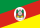
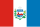

| São Paulo |
46 081 801 |
44 411 238 |
7,63% |
3 149 039 |
21,59% |
Argentina (45 851 378) |
| Minas Gerais |
21 393 441 |
20 539 989 |
4,81% |
942 659 |
10,02% |
Chade (21 003 705) |
| Rio de Janeiro |
17 223 547 |
16 055 174 |
0,41% |
65 245 |
8,07% |
Zimbabwe (16 950 795) |
| Bahia |
14 870 907 |
14 141 626 |
0,89% |
124 720 |
6,97% |
Benim (14 814 460) |
| Paraná |
11 890 517 |
11 444 380 |
9,57% |
999 854 |
5,57% |
Haiti (11 906 095) |
|  Rio Grande do Sul |
11 233 263 |
10 882 965 |
1,77% |
189 036 |
5,26% |
Emirados Árabes Unidos (11 346 000) |
| Pernambuco |
9 562 007 |
9 058 931 |
2,98% |
262 483 |
4,48% |
Israel (9 517 181) |
| Ceará |
9 268 836 |
8 794 957 |
4,05% |
342 576 |
4,34% |
Áustria (9 113 574) |
 Pará Pará |
8 711 196 |
8 120 131 |
7,11% |
539 080 |
4,08% |
Serra Leoa (8 819 794) |
| Santa Catarina |
8 187 029 |
7 610 361 |
21,80% |
1 361 925 |
3,84% |
Laos (7 873 046) |
| Goiás |
7 423 629 |
7 056 495 |
17,53% |
1 052 707 |
3,48% |
Líbia (7 458 555) |
| Maranhão |
7 018 211 |
6 776 699 |
3,07% |
201 910 |
3,29% |
Paraguai (7 013 078) |
| Amazonas |
4 321 616 |
3 941 613 |
13,14% |
457 628 |
2,02% |
Panamá (4 571 189) |
| Paraíba |
4 164 468 |
3 974 687 |
5,53% |
208 159 |
1,95% |
Croácia (3 848 160) |
| Espírito Santo |
4 126 854 |
3 833 712 |
9,07% |
318 760 |
1,93% |
Croácia (3 848 160) |
| Mato Grosso |
3 893 659 |
3 658 649 |
20,54% |
623 527 |
1,82% |
Croácia (3 848 160) |
| Rio Grande do Norte |
3 455 236 |
3 302 729 |
4,25% |
134 702 |
1,62% |
Mongólia (3 517 100) |
| Piauí |
3 384 547 |
3 271 199 |
4,90% |
152 839 |
1,59% |
Uruguai (3 384 688) |
|  Alagoas |
3 220 848 |
3 127 683 |
0,23% |
7 189 |
1,51% |
Bósnia e Herzegovina (3 140 095) |
| Distrito Federal |
2 996 899 |
2 817 381 |
9,62% |
247 221 |
1,40% |
Moldávia (2 996 106) |
| Mato Grosso do Sul |
2 924 631 |
2 757 013 |
12,58% |
307 989 |
1,37% |
Armênia (2 952 365) |
 Sergipe Sergipe |
2 299 425 |
2 210 004 |
6,87% |
141 987 |
1,08% |
Guiné-Bissau (2 249 515) |
| Rondônia |
1 751 950 |
1 581 196 |
1,20% |
18 787 |
0,82% |
Macedônia do Norte (1 813 791) |
 Tocantins Tocantins |
1 586 859 |
1 511 460 |
9,25% |
128 015 |
0,74% |
Barém (1 643 332) |
| Acre |
884 372 |
830 018 |
13,15% |
96 459 |
0,41% |
Comores (882 847) |
| Amapá |
806 517 |
733 759 |
9,59% |
64 233 |
0,38% |
Butão (796 682) |
| Roraima |
738 772 |
636 707 |
41,34% |
186 228 |
0,35% |
Butão (796 682) |